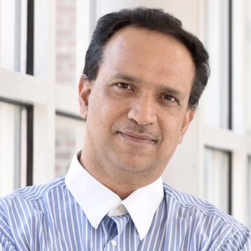
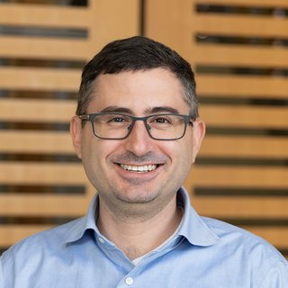
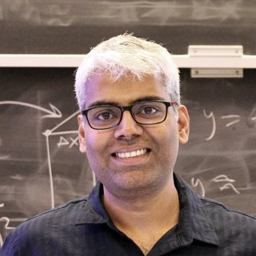

Prosody & phonetics
Intonation, tone, prominence, phrasing, rhythm, and timing, along with their linguistic and interactional functions.
ACL 2027 Workshop Kyoto, Japan August 18 or 19, 2027
Prosodic and Paralinguistic Understanding and Generation
Beyond words, ParaCL connects speech, NLP, and multimodal AI communities to explore understanding and generation of prosodic and paralinguistic signals.
01 About
Human listeners infer meaning not only from what is said, but how it is said.
From intonation, rhythm, and timing to gaze, laughter, sighs, and other non-verbal vocalizations, paralinguistic signals reveal aspects of speakers and interactions that transcripts rarely capture: emotion, engagement, uncertainty, politeness, sarcasm, social positioning, interpersonal coordination, and communicative intent.
Language technologies increasingly need these capabilities. Speech language models now operate over acoustic signals that expose prosody rather than transcripts. Multimodal language models must reason across speech, text, gaze, gesture, and behavior. Speech synthesis systems must produce appropriate emphasis, affect, style, timing, and conversational behavior.
Yet research on these signals is fragmented across several partially distinct communities. ParaCL brings the paralinguistic communities in speech, audio, vision, and language together to develop a shared computational research agenda around information carried alongside and beyond words: how paralinguistics should be represented, learned, interpreted, generated, and evaluated.
72 of 3,084 accepted papers in 2025; 153 of 4,457 in 2026.
Intonation, tone, prominence, phrasing, rhythm, and timing, along with their linguistic and interactional functions.
Emotion, speaker states and traits, social behavior, non-verbal vocalizations, and related acoustic signals.
How these signals function in context, across turns, modalities, and conversational partners.
02 Call for Papers
We invite original research papers and position/synthesis papers addressing both understanding and generation of prosodic and paralinguistic signals. Topics include, but are not limited to:
We especially encourage work that crosses traditional boundaries: for example, papers connecting linguistic prosody with speech foundation models, computational paralinguistics with pragmatics or dialogue, or empirical observations from one community that challenge assumptions prevalent in another.
We particularly welcome multilingual, cross-variety, community-partnered, and conversational work, as well as computational, phonetic, psycholinguistic, interactional, and critical perspectives.
Both lengths accept original research and position/synthesis papers. Page limits exclude references.
The non-archival track welcomes works in progress and application-driven perspectives.
Format submissions with the official ACL style files. Accepted papers will be presented as posters, with selected papers featured in a spotlight session.
03 Important Dates
All deadlines are 11:59 PM AoE.
04 Invited Speakers
University of Texas at El Paso
KTH Royal Institute of Technology
Bielefeld University
Georgia Tech
Zoom
Sesame
05 Schedule
Times are in Japan Standard Time (UTC+9). ParaCL is hybrid: attend in person in Kyoto or online through the ACL 2027 platform. Talks will be recorded.
| Time | Session |
|---|---|
| 8:30–8:40 | Opening Remarks |
| 8:40–10:00 | Invited Talks |
| 10:00–11:00 | Coffee Break & Poster Session |
| 11:00–11:40 | Invited Talk |
| 11:40–12:10 | Spotlight Session (Poster Highlights) |
| 12:10–14:00 | Lunch Break |
| 14:00–15:30 | Invited Talks |
| 15:30–16:30 | Coffee Break & Poster Session |
| 16:30–17:50 | Invited Talks |
| 17:50–18:30 | Panel Discussion |
06 Organizers
UC Berkeley / UC Irvine
Stony Brook University

University of Maryland, College Park

UT Austin
UC Berkeley
UC Berkeley

UC Berkeley
Carnegie Mellon University
Georgia Tech
UC Berkeley
07 Contact